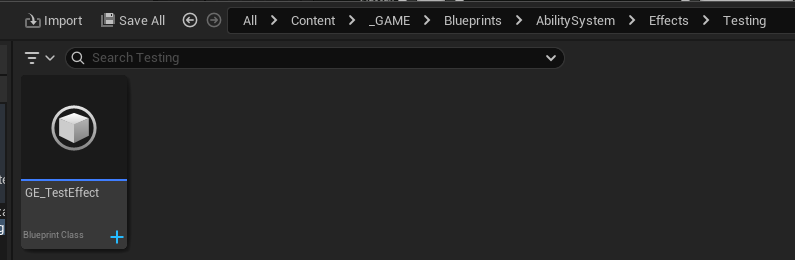
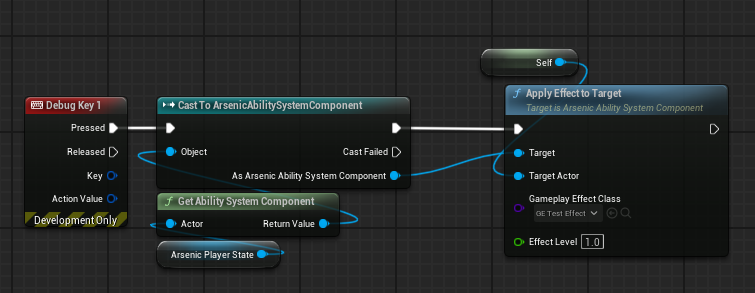

GAS & Attributes
There isn’t a lot to document here other than a few details that will help with working with attributes and the UArsenicAbilitySystemComponent. Ability System blueprints are in the following file path:

Attributes
We initialize attributes via gameplay effects, but because we have to think about saving and loading attribute data, we need a convenient place to store and retrieve data, and a way to dynamically set modifier magnitude values within gameplay effects. I made a struct in the AArsenicCharacterBase that sets the initial values for the attributes. In the editor, there’s a gameplay effect called GE_InitializeAttributes that defines which attributes to initialize. Instead of setting the ModifierMagnitude values in that effect, we set the ModifierMagnitude type to SetByCaller which allows us to set the attribute value in code, which is done on the AArsenicPlayerState class in the InitializeAttributes function. There’s some additional logic that determines whether or not to initialize attributes from save data or to initialize based on the default values in the struct on the base character class.
Overall, the AArsenicPlayerState handles the vast majority of attribute details for the player character, including binding to OnAttributeChanged delegates, which will be important to know how to do for other objects and classes. This approach is how we can manipulate the player’s walk speed via gameplay effects:ww
void AArsenicPlayerState::BindAttributeDelegates()
{
check(ArsenicAbilitySystemComponent)
ArsenicAbilitySystemComponent->GetGameplayAttributeValueChangeDelegate(UArsenicAttributeSet::GetWalkSpeedAttribute()).AddUObject(this, &ThisClass::OnWalkSpeedChanged_Callback);
ArsenicAbilitySystemComponent->GetGameplayAttributeValueChangeDelegate(UArsenicAttributeSet::GetLookSpeedAttribute()).AddUObject(this, &ThisClass::OnLookSpeedChanged_Callback);
}
Lastly, there’s a throwaway test effect that can be used to test how effects work without having to think about organization or structure. A design space, so to speak. Use it or don’t, it won’t end up in the final game.

General GAS
The AArsenicPlayerCharacter class has a startup abilities array that defines which abilities to grant the player when the game starts. This is the easiest way to grant player abilities at startup and showcases how to grant abilities to the player at other times.
The AArsenicCharacterBase class has some notes on how GAS works that I wrote when I was taking the GAS course. They might help you in the future!
The UArsenicAbilitySystemComponent has a custom function that applies a gameplay effect to a target actor who also implements an ability system component. It’s called ApplyEffectToTarget and is blueprint callable:
